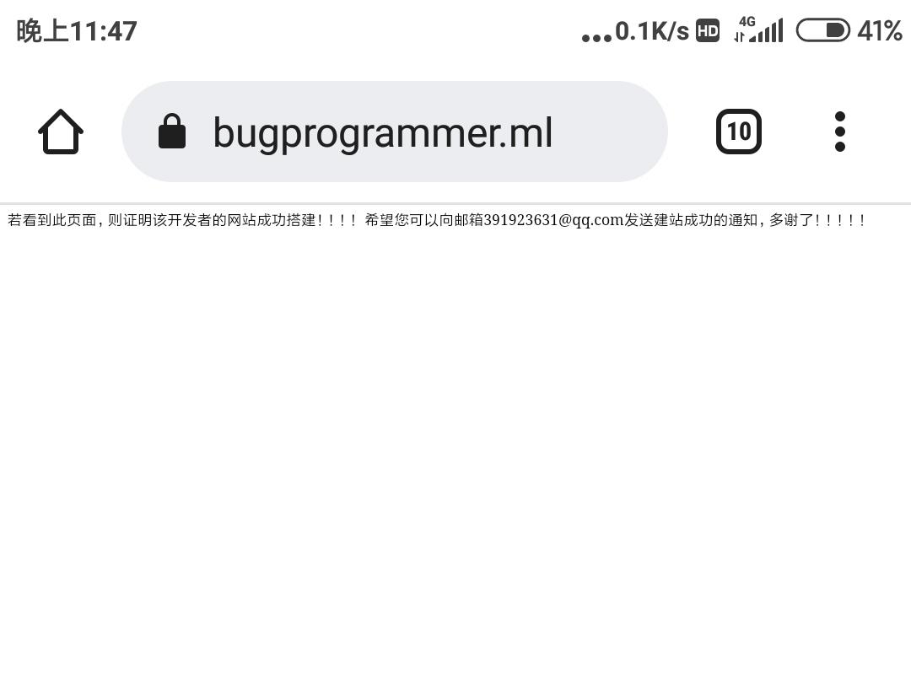

关于作者
我，高中生一枚。爱好编程技术，对Python 稍有涉猎（至于C语言，只能写个“Hello,world”，略过不谈）。没有个人电脑（家里只有一台上网课的)，几乎所有编程工作都是在手机上完成的。(＞﹏＜)
关于此网站
开发与搭建
因为学业繁忙，本网站页面遵循轻量和极简的原则开发（这其中也有懒的成分）。所以可能没有比这更简陋的网站了［手动狗头］
此网站托管在GitHub Page和Gitee Page服务上，基本页面结构来源W3school。至于域名，则来自于freenom的免费顶级域名。可谓是《真·零成本》。（学生党，没钱应该可以理解(>v<)）
这个博客是我在无框架的情况下开发的，以后会不时更新。୧꒰•̀ᴗ•́꒱୨
以下是本网站托管在GitHub和Gitee的两个永久有效网址
该网站经历的“峥嵘岁月”（不是
这个网站刚开始只是纯Html页面，当我写这个关于页面时，我就已经开始用css来美化界面了。
该网站大概在今年（2022年）年初建立，具体的日期记不清了，只找到一个最早的截图□_□，所以运行时间只好从1月30日算起
2022.12新增gitalk评论系统
联系作者
邮箱 bugcoderx@qq.com
GitHub http://github.com/1stbugcoder
Gitee http://gitee.com/bugcoder1
博客园 http://www.cnblogs.com/1stbugcoder/
声明
本博客文章中的所有代码，均遵循Apache License 2.0开源协议
All the article of this blog follow the Apache License 2.0 open source protocol.
本博客中的所有文章均使用《署名-非商业性使用-相同方式共享 4.0 国际 (CC BY-NC-SA 4.0)》协议授权
All articles in this blog are licensed under the Attribution-NonCommercial-ShareAlike 4.0 International (CC BY-NC-SA 4.0) agreement
转载文章需要声明来源
Reprinted articles need to declare the source.